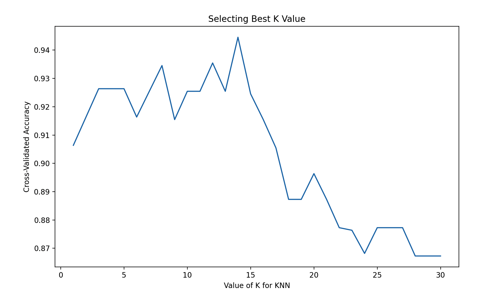

K近邻算法
K近邻算法（K-Nearest Neighbors, KNN）
方法概览
1.1 一句话本质
KNN 不学习显式方程，而是在标准化后的特征空间里寻找最相似的 $K$ 个历史样本，用局部多数票决定新样本类别。
1.2 定义
K 近邻算法是一类基于实例的非参数方法。它不显式拟合一个全局模型，而是在预测时直接寻找距离目标样本最近的 $K$ 个训练样本，并用这些近邻的标签做多数投票或平均。
1.3 它主要解决什么问题
- 研究问题：如何利用“与目标样本最相似的一组历史个体”来完成分类或预测。
- 适用任务：二分类、多分类、连续结局预测、相似病例检索。
- 常见医学场景：基于相似患者进行疾病亚型判别、辅助诊断、连续评分估计。
1.4 直觉理解
KNN 的核心想法很直接：如果一个新病人的各项特征和某些既往病人非常像，那么他们的诊断结果或风险水平往往也更接近。
核心思想与原理
2.1 根本困难
总体人群可能不存在一条简单的全局判别边界，但目标患者附近的小区域往往更同质。难点在于“相似”必须通过特征、尺度和距离共同定义。
2.2 关键洞察
把预测推迟到查询时：先计算新样本到训练样本的距离，再截取最近邻域投票。小 $K$ 形成窄而灵活的邻域，大 $K$ 汇入更多样本、边界更平滑，构成方差与偏差的权衡。
2.3 距离就是模型
KNN 虽称“非参数”，并非没有假设。标准化方式、变量权重、类别编码、距离函数和 $K$ 共同决定邻域，等价于规定哪些临床差异重要、哪些可以忽略。
数学形式
3.1 核心公式
给定目标样本 $x^*$，设 $\mathcal{N}_K(x^*)$ 为与其距离最近的 $K$ 个样本集合。
分类时：
$$ \hat y(x^*) = \operatorname{mode}\{y_i : i \in \mathcal{N}_K(x^*)\} $$
回归时：
$$ \hat y(x^*) = \frac{1}{K}\sum_{i \in \mathcal{N}_K(x^*)} y_i $$
常见距离度量为欧氏距离：
$$ d(x, z) = \sqrt{\sum_{j=1}^{p}(x_j - z_j)^2} $$
3.3 参数或统计量含义
- $K$：参与投票或平均的近邻数。
- $d(x, z)$：距离函数，可取欧氏、曼哈顿、闵可夫斯基等。
weights：是否按距离加权，距离越近的邻居影响越大。
3.4 关键假设
- 相似输入对应相似输出。
- 特征空间中的距离有实际意义。
- 特征量纲需要可比，通常需要标准化。
手把手算例
所有特征已标准化。待分类患者为 $x^*=(2,2)$，训练样本如下：
| 样本 | 坐标 | 类别 | 到 $x^*$ 的距离 |
|---|---|---|---|
| A | $(2.4,2.0)$ | 1 | 0.4 |
| B | $(2.0,2.6)$ | 1 | 0.6 |
| C | $(2.0,1.0)$ | 0 | 1.0 |
| D | $(1.0,1.0)$ | 0 | $\sqrt{2}\approx1.414$ |
| E | $(4.0,4.0)$ | 1 | $\sqrt{8}\approx2.828$ |
取 $K=3$ 时，最近邻是 A、B、C，类别票数为 $1:2$、$0:1$，因此预测为类别 1；未加权的邻居比例为：
$$ \hat P(Y=1\mid x^*)=\frac{2}{3}\approx0.667 $$
若按距离倒数加权，三个权重为 $2.5$、$1.667$、$1$，类别 1 的加权比例为：
$$ \frac{2.5+1.667}{2.5+1.667+1}\approx0.806 $$
这个比例是邻域投票强度，不天然是校准后的临床概率。若改取 $K=4$，两类各两票，结果会依赖平票规则，提示应通过交叉验证和稳定性分析选择 $K$。
数据形式与输入输出
5.1 适合的数据形式
- 自变量类型：连续变量或数值化后的离散变量。
- 因变量类型：二分类、多分类，也可扩展到连续型。
- 数据结构：宽表数据。
- 是否适合高维数据：高维下容易出现维数灾难。
- 是否适合缺失较多数据：需先处理缺失值。
- 是否适合删失数据：不适合。
- 是否适合重复测量数据：不直接适合。
5.2 示例表格
以糖尿病视网膜病变筛查为例：
| Age | HbA1c | DiabetesYears | SBP | Albuminuria | RetinopathyClass |
|---|---|---|---|---|---|
| 68 | 8.2 | 16 | 142 | 1 | severe |
| 45 | 6.5 | 4 | 126 | 0 | none |
| 59 | 7.4 | 10 | 138 | 1 | mild |
| 51 | 6.9 | 7 | 130 | 0 | none |
| 63 | 8.0 | 13 | 146 | 1 | severe |
5.3 输入与产出
输入
- 输入数据：带标签的训练样本和待预测样本。
- 关键变量：近邻数
k、距离度量、是否距离加权。 - 需要预处理的内容：标准化、异常值检查、训练测试集划分。
产出
- 模型对象/统计结果：近邻搜索规则、最优
k、预测标签或数值。 - 参数估计：没有全局回归系数或判别参数。
- 预测结果：类别标签、类别概率或连续值。
- 不确定性指标：交叉验证准确率、F1、AUC、测试集误差。
适用场景
- 适合：局部相似性强、样本规模中小、希望保留“相似病例”直觉的任务。
- 不适合：高维稀疏、超大样本、需要明确全局参数解释的场景。
- 使用前需要特别检查的点：特征标准化、距离定义、
k的选择、类别不平衡。
实现
常用包：
scikit-learn
import pandas as pd
from sklearn.model_selection import train_test_split
from sklearn.pipeline import make_pipeline
from sklearn.preprocessing import StandardScaler
from sklearn.neighbors import KNeighborsClassifier
df = pd.read_csv("retinopathy.csv")
X = df[["Age", "HbA1c", "DiabetesYears", "SBP", "Albuminuria"]]
y = df["RetinopathyClass"]
X_train, X_test, y_train, y_test = train_test_split(
X, y, test_size=0.2, random_state=42, stratify=y
)
fit = make_pipeline(
StandardScaler(),
KNeighborsClassifier(n_neighbors=7, weights="distance")
)
fit.fit(X_train, y_train)
常用包：
FNN
library(FNN)
pred <- knn(
train = X_train,
test = X_test,
cl = y_train,
k = 7
)
结果如何解释
- 核心结果看什么：最优
k、测试集表现、邻域是否稳定。 - 每个主要参数如何解释：
k越小越灵活但方差更大；k越大越平滑但可能欠拟合。 - 临床或医学意义如何表达：适合解释为“该患者的判别主要参考了若干最相似患者的结果”。
- 常见误读：KNN 不会自动学习全局规律，它只基于局部邻域做判断。
假设诊断与稳健性
- 预处理必须折内完成：标准化、插补和特征选择只能在训练折拟合，防止验证信息进入距离计算。
- 绘制性能—$K$ 曲线：用分层或分组交叉验证选择 $K$，关注宽阔稳定平台而非偶然最高点。
- 检查距离集中：比较最近与最远距离之比；高维下若距离趋同，先做变量筛选、降维或改用更合适度量。
- 审查邻域组成：查看关键病例的近邻、距离和标签；邻域跨中心、设备或人群边界时，医学相似性可能不足。
- 处理类别不平衡：报告各类召回率，尝试距离加权、类别权重或重采样，不能只看准确率。
- 检查平票和重复点：不同标签却坐标相同提示测量噪声或特征不足；固定平票规则并做敏感性分析。
- 按真实独立单位切分：同一患者多次记录必须处于同一折，否则近邻检索会产生近乎复制的泄漏。
推荐可视化
- 不同
k值下的交叉验证性能曲线。 - 降维后的近邻分布图。
- 混淆矩阵或类别召回率图。
10.1 图像示例
下图给出 KNN 案例中交叉验证准确率随 k 变化的曲线，适合说明近邻数选择对模型偏差和方差平衡的影响。

优势、局限与常见坑
优势
- 简单直观。
- 非参数，无需显式模型假设。
- 能很好体现“相似病例”思路。
局限
- 对特征尺度和噪声敏感。
- 高维下效果下降明显。
- 预测阶段计算成本较高。
常见坑
- 不标准化特征。
- 在高维稀疏数据上直接使用欧氏距离。
- 只凭经验选
k，不做验证。
与相近方法的区别
- 和 K近邻回归的区别：KNN 回归处理连续结局，这里主条目更强调分类与判别。
- 和局部加权回归的区别：局部加权回归会在局部拟合模型，KNN 更多是邻域投票或平均。
- 和朴素贝叶斯的区别：KNN 基于距离与实例相似性，朴素贝叶斯基于概率分解和条件独立假设。
医学研究中的典型应用
- 相似患者辅助诊断。
- 小样本疾病分型。
- 相似病例驱动的风险筛查与推荐。
关键术语
- 近邻集合：离查询样本最近的 $K$ 个训练样本。
- 距离度量：定义样本相似性的函数，如欧氏距离或曼哈顿距离。
- 距离加权投票：让更近邻居拥有更大表决权。
- 维数灾难：维度升高后样本变稀、距离失去区分力的现象。
- 局部决策边界：由附近训练样本标签变化形成的分类边界。
- 平票规则：各类别票数相同时的确定性处理约定。
- 惰性学习：训练阶段主要存储样本、预测阶段才完成计算的学习方式。
相关方法
参考资料
- Hastie T, Tibshirani R, Friedman J. The Elements of Statistical Learning. 2nd ed. Springer; 2009.
- scikit-learn Developers.
sklearn.neighbors.KNeighborsClassifier. scikit-learn API Reference. https://scikit-learn.org/stable/modules/generated/sklearn.neighbors.KNeighborsClassifier.html （访问日期：2026-07-02） - Beygelzimer A, Kakade S, Langford J. Package
FNN. CRAN. https://cran.r-project.org/package=FNN （访问日期：2026-07-02）